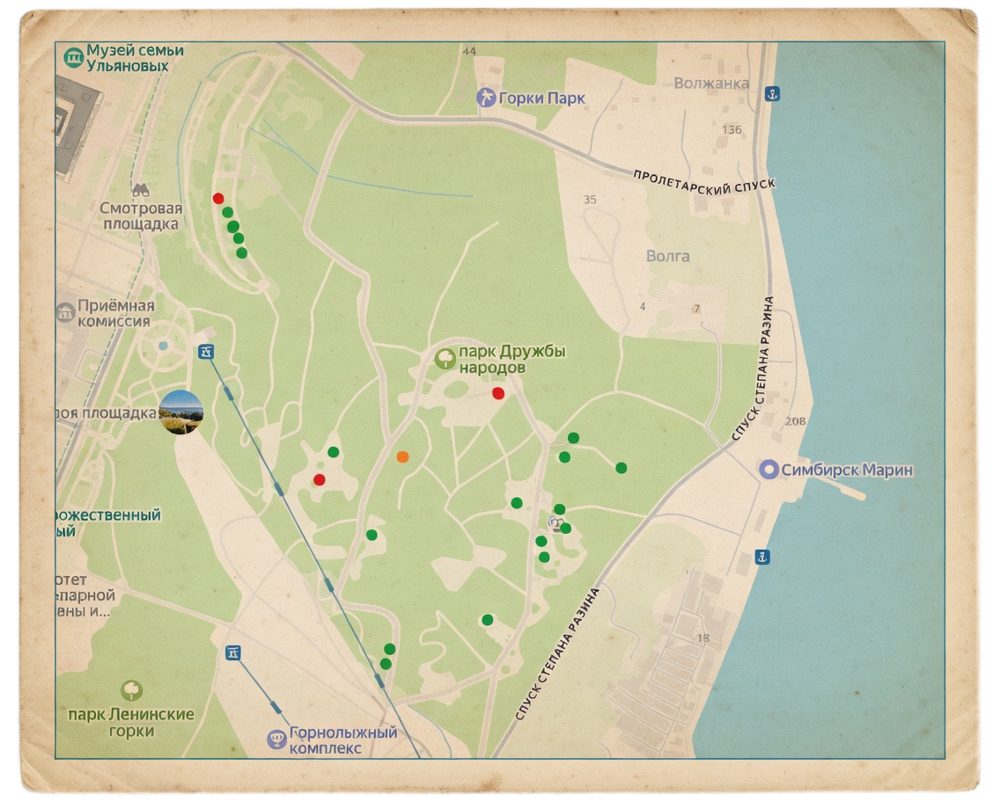

Нажми на точку, чтобы узнать судьбу скульптуры.
Интерактивный путеводитель по истории Ульяновска
Парк Дружбы народов — главный городской парк и лесопарк в центре Ульяновска. Парк строился в качестве символического дара советских республик городу, в котором родился В. И. Ленин, к 100-летию со дня его рождения. Поэтому в советские годы парк Дружбы народов в Ульяновске считался одной из главных достопримечательностей города. Проект парка был разработан архитектором А. Бросманом и утверждён в 1966 году. В строительстве и обустройстве парка принимали участие архитекторы, скульпторы и садовники из 15 союзных республик. В 1969 году парк был официально открыт. После распада Советского Союза финансирование парка сильно сократилось, что привело к его запустению. Многие скульптуры были похищены, большая часть композиций была разрушена и заросла травой и кустарниками.
Вы можете прогуляться по виртуальной карте, узнать судьбу каждого памятника: какие из них сохранились до наших дней, а какие были утрачены.
Интерактивный маршрутный лист. Ульяновск.

Нажми на точку, чтобы узнать судьбу скульптуры.